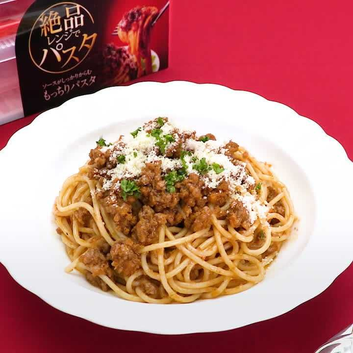

Spaghetti Bolognese

Description
Basic spaghetti with meat and tomato sauce, with ingredients easily accessible in Japan
Taken from Delish Kitchen
Ingredients (For 1 person)
Main ingredients
- Pasta (spaghetti) 100g
- Minced meat 100g
- Onions 1/4 head (50g)
- Carrots 1/3 stick (50g)
- Garlic paste 1/4 tsp
- Olive oil 1 tbsp
Seasonings
- Ketchup 2 tbsp
- Worcestershire sauce 1 tbsp
- Red wine 2 tbsp
- Salt and pepper to taste
- Water 70 ml
Garnish
- Shredded parsley a little
- Powdered parmesan to taste
Return to top